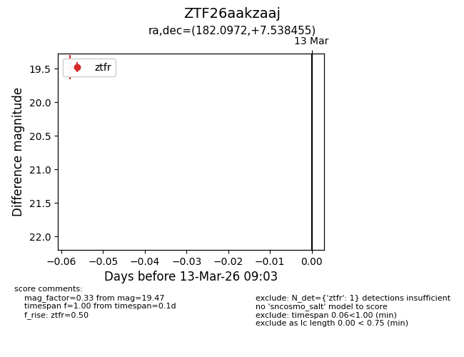
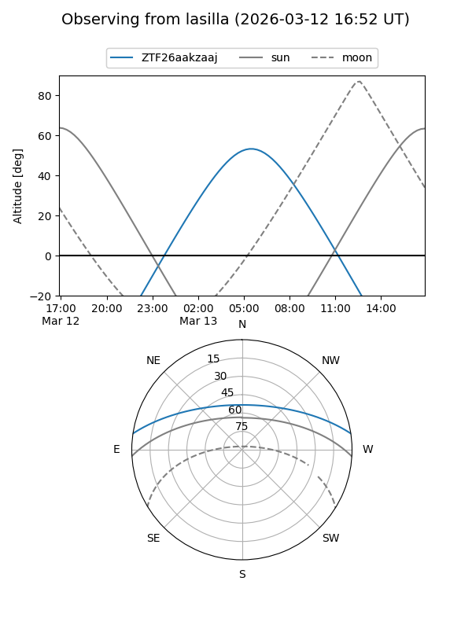
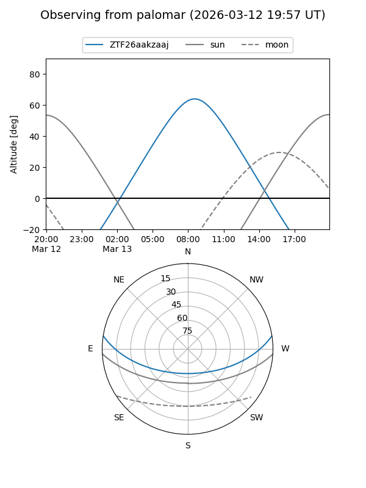

ZTF26aakzaaj
Target ZTF26aakzaaj at 2026-03-13 09:05
Aliases and brokers:
FINK: link
Lasair: link
ALeRCE: link
alt names
ZTF26aakzaaj (ztf,fink_ztf)
Coordinates:
equatorial (ra, dec) = 182.0972,+7.53846
equatorial (HMS+DMS) = 12:08:23.34,+07:32:18.44
galactic (l, b) = (273.4420,+67.91058)
Flags:
Photometry:
last ztfr=19.47
1 ztfr detections
Lightcurve

Visibility


Additional plots